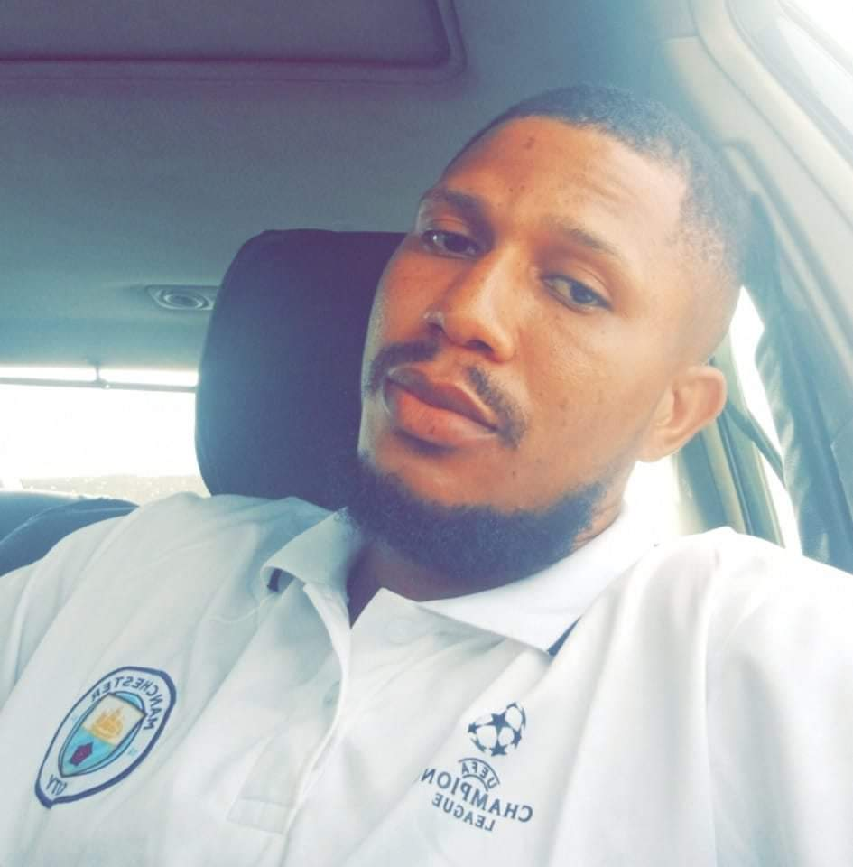
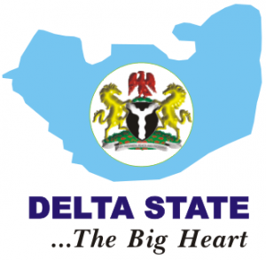

Andrew Nafagha
About Me
Hello! My name is Andrew Nafagha, and I'm from Delta State, Nigeria. I'm passionate about technology, design, and personal growth. When I'm not studying or coding, I enjoy spending time with my family, taking my dog for walks, working out at the gym, and relaxing with a few close friends.
I have always been fascinated by how websites are created and how technology connects people across the world. Enrolling in WDD 131 - Dynamic Web Fundamentals has given me an amazing opportunity to strengthen my web development skills and learn how to build professional, accessible, and user-friendly web pages. This journey has already taught me a lot about structure, styling, and interactivity, and I look forward to mastering even more as the semester continues.
Nigeria, Delta State
Delta State is one of Nigeria's most vibrant and resourceful regions, known for its rich oil reserves, cultural diversity, and beautiful natural landscapes. The state features lush greenery, rivers, and wetlands that support fishing, farming, and tourism. It's a melting pot of many ethnic groups, including the Urhobo, Itsekiri, Isoko, and Ijaw people - each with their unique traditions, languages, and festivals.
Beyond its natural and economic value, Delta State is full of warmth, hospitality, and creativity. From local art and music to traditional food and fashion, it represents the energetic spirit of southern Nigeria. It's a place I'm proud to call home, and it constantly inspires me to learn, grow, and give back through my work.